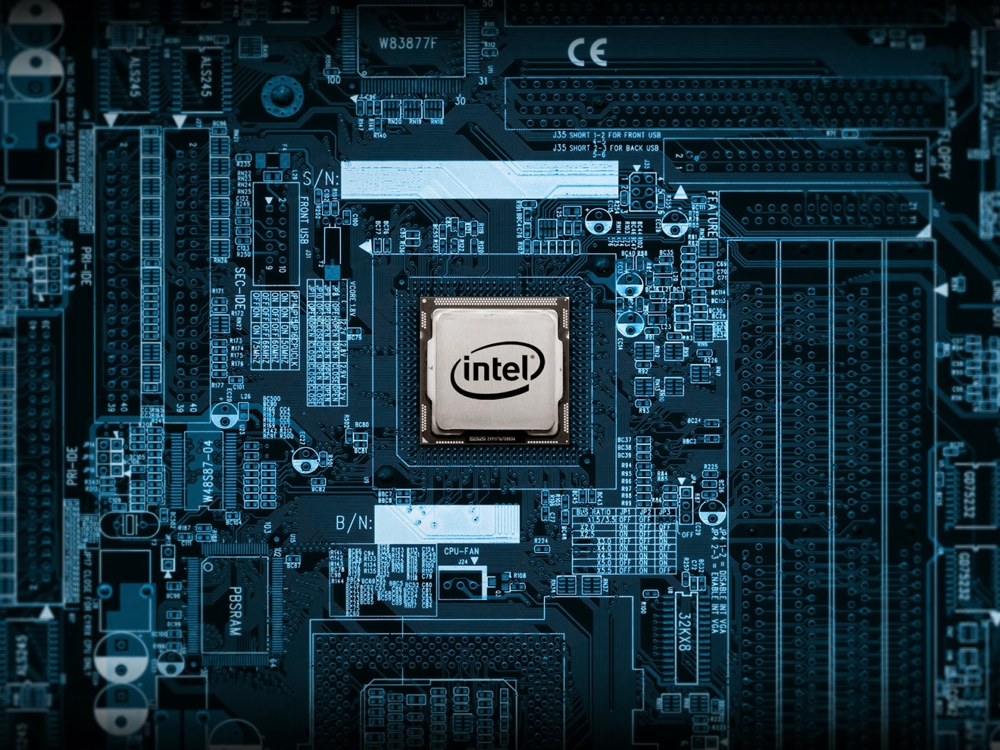

Inicio
Comparativa entre Procesadores Intel y AMD Ryzen
Intel

- Amplia gama de procesadores para todas las necesidades, desde laptops hasta servidores.
- Tradición en la industria y alta presencia en la mayoría de las computadoras personales.
- Rendimiento sólido en tareas de un solo núcleo y aplicaciones que dependen de frecuencia de reloj elevada.
| Referencia |
Puntaje |
| i9 13900 KS |
3089 |
| i9 13900 KF |
2960 |
| i9 13900 K |
2954 |
Procesadores
Horario semanal
| Hora |
Lunes |
Martes |
| 7:00 am |
Desayuno |
AMD Ryzen

- Arquitectura moderna con múltiples núcleos y subprocesos, ideal para multitarea y aplicaciones intensivas en paralelo.
- Competitividad en precio y rendimiento, ofreciendo una buena relación calidad-precio.
- Rendimiento destacado en aplicaciones que aprovechan múltiples núcleos, como renderizado 3D y transcodificación de video.